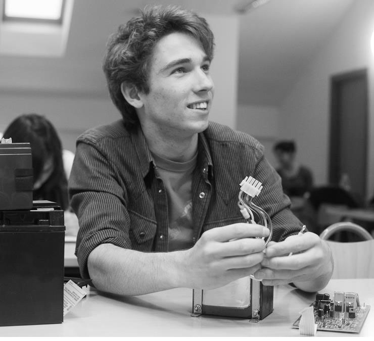

Projekt NeuroAsteroids je projekt nastao u sklopu predmeta Projekt na prediplomskom studiju Fakulteta elektrothnike i računarstva. Bavio se s nekoliko područja: neuronskim mrežama, evolucijskim algoritmima te računalnim igrama. Igra na kojoj se projekt temeljio je inspirirana arkadnom igrom „Asteroids“.
Projekt bi mogli podijeliti na dva područja. Prvo je računalna igra za koju je potrebno napraviti fiziku svijeta, model svijeta s njegovim objektima te animacije. Kako bi i ljudi i neuronske mreže mogli igrati igru bilo je potrebno omogućiti i igranje igre bez grafičkog sučelja te njeno ubrzanje jer računalo puno brže procesira informacije od čovjeka.
Drugo područje su neuronske mreže „igrači“ koje igraju igru pomoću određenih informacija o svijetu ih koje okružuju. Zbog kompleksnosti igre i svijeta koji okružuje igrača potrebno je davati različite jednostavne informacije kojih treba biti što manje. Učenje neuronskih mreža napravljeno je genetskim algoritmom.
Projekt je pisan u programskom jeziku Java, a sama igra u JavaFX tehnologiji koja ima različite napredne mogućnosti.

{kind=link}
{kind=link}
- Mentor
- doc. dr. sc. Marko Čupić
- Članovi
- Filip Gulan
- Andrija Miličević
- Domagoj Nakić
- Fredi Šarić
- Luka Žmegač
LITERATURA
- Prirodom inspirirani optimizacijski algoritmi. Metaheuristike. (2013) [Čupić]
- Umjetne neuronske mreže (2008) [Čupić, Bašić, Šnajder]
- Game physics engine development (2007) [Millington]
- Pro JavaFX 8 (2014) [Vos, Gao, Chin, Iverson, Weaver]
- Artificial neural networks technology (1992) [Anderson, McNeill]
Filip Gulan
Prije početka samog projekta bio sam jako skeptičan po pitanju kako ću se uspjeti snaći i odraditi svoj dio kako treba. No zahvaljujući izvrsnom timu i mentoru ispalo je veoma dobro. Prije početka samog projekta nisam znao što su neuronske mreže u računarstvu, genetski algoritam niti sam imao ikakvog iskustva u izradi igrica, no upornim trudom i radom naučio sam puno novih stvari te stekao neka nova znanja na području umjetne inteligencije i ponajviše u izradi igrica u tehnologiji JavaFX. Preporučio bih svima koga bar malo zanimaju gore navedeni pojmovi da si uzmu ovakav sličan projekt, jer naučit će gomilu novih i korisnih stvari, a istovremeno se i dobro zabaviti.
Andrija Miličević
Radeći na ovom projektu naučio sam mnogo. Naučio sam što su neuronske mreže te kako ih implementirati i istrenirati. Upoznao sam tehnologiju JavaFX te izradu igre u istoj. Po prvi puta sam koristio alate za rad u timu. Posebno sam ponosan na uspješan rad u timu te naših gotovo 10k linija koda.
Luka Žmegač
Projekt je bio zanimljivo iskustvo. Od početka smo znali da će biti zahtjevno i zahvaljujući timskom radu smo uspjeli u njegovoj izradi. Kroz projekt sam se upoznao s područjem umjetne inteligencije te ponešto od toga što se krije iza pojmova „neuronske mreže“ i „evolucijski algoritmi“. Unaprijedio sam i znanja u izradi grafičkog korisničkog sučelja u radu s tehnologijom JavaFX koju sam na projektu prvi puta susreo.
Domagoj Nakić
Projekt je bio vrijedno iskustvo timskog rada. Drago mi je što sam naučio osnove rada na platformi JavaFX kao i što sam proširio svoja znanja o umjetnim neuronskim mrežama.
Fredi Šarić
Jako sam zadovoljan s ovim projektom jer sam stekao puno znanja vezana uz neuronske mreže, umjetnu inteligenciju i evolucijske algoritme općenito, kao i znanje o razvoju računalnih igrica i tehnologiji “JavaFx”, te sam se još više zainteresirao u računalnu znanost i područje umjetne inteligencije. Također sam stekao iskustvo u radu s timom i sad znam koliko je važno imati dobar tim i komunikaciju unutar tima da bi neki projekt uspio.